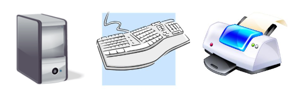

|
Beth is writing a 10-page research paper as the final project in her class. The paper includes a great number of graphics, graphs, and photos in addition to the text and has a total file size of approximately 3 GB. She has always used a 4-GB flash drive to create an extra copy of the paper, but she already has 2 GB of information on that flash drive and has run out of capacity to add this paper. She has not yet obtained another flash drive. Her PC has been crashing occasionally, but so far she has been able to continue working on the paper. A week before the paper is due, Beth’s hard drive encounters a critical error, and her computer becomes inoperable. She loses all her data, including all the files containing the photos for the paper, her research notes, and the paper itself. The local computer repair store cannot retrieve the data because the failure corrupted the files. |
This worst-case scenario may never happen to you, but preparing for it will minimize or lessen its impact should it occur. It is critical to have copies/backups of all important documents, pictures, or projects on your computer. Inevitably, it seems, computer failures occur at the most inopportune time. Beth will need to replace the hard drive and all her application programs, and she might be able to retrieve her paper if she has backed up her information.
| Device Category | Typical Peripherals |
|---|---|
| Storage devices |
|
You enter data into the computer, where it is processed into information. That information must be displayed and/or printed immediately, or stored for later retrieval. This means the storage device must retain the data permanently, even after the computer is turned off, or until you decide to delete it. There are multiple versions of this type of storage device, including the hard drive installed inside your PC system, flash or thumb drives inserted via a USB port, external hard drives that are separate from the system unit, and CD or DVD disks onto which data can be written. The latest technology for data storage is cloud storage. The storage device you choose may depend on convenience, amount of data that can be stored, and/or cost. Whichever media is chosen for storage, it should be able to hold backup copies of your important documents.
| Note: Prices calculated from sites such as Amazon and Best Buy. | |||||||||||||||||||||
|
The latest approach to media storage is online storage, commonly referred to as "cloud storage." In this method, the information or data that is to be stored resides not on your PC or even on a device you plug into your PC, but on a machine (server) that you access via the internet. One advantage to this type of storage is that the online storage site is responsible for keeping your information secure and safe. Even if your own location suffers catastrophic loss (e.g., in a fire or hurricane), your information is still intact and safe at the online site.
| Source: (Cloud storage, 2014) | ||||||||||
|
Learn by Doing

Cloud storage. (2014, January 17). Retrieved from Wikipedia, The Free Encyclopedia: http://en.wikipedia.org/wiki/Cloud_storage.
Google cloud storage pricing. (2016, July 22). Retrieved August 16, 2016, from https://developers.google.com/storage/pricing